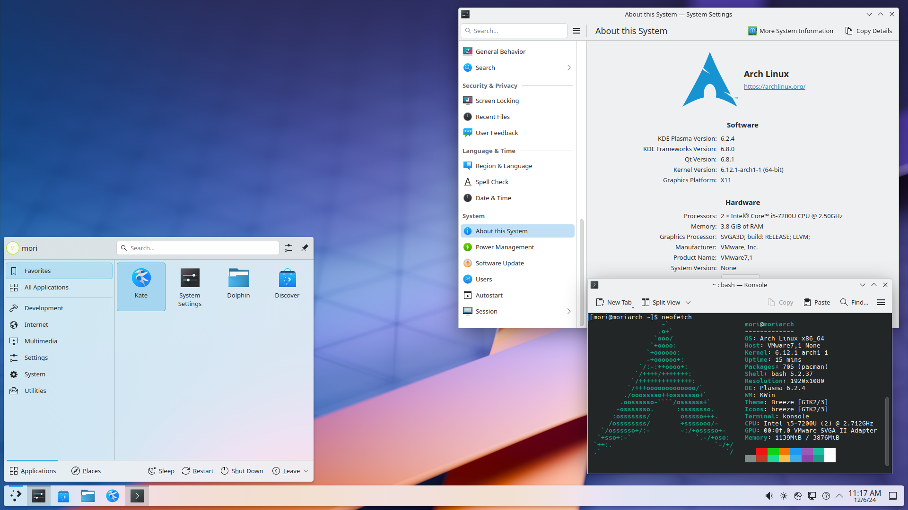
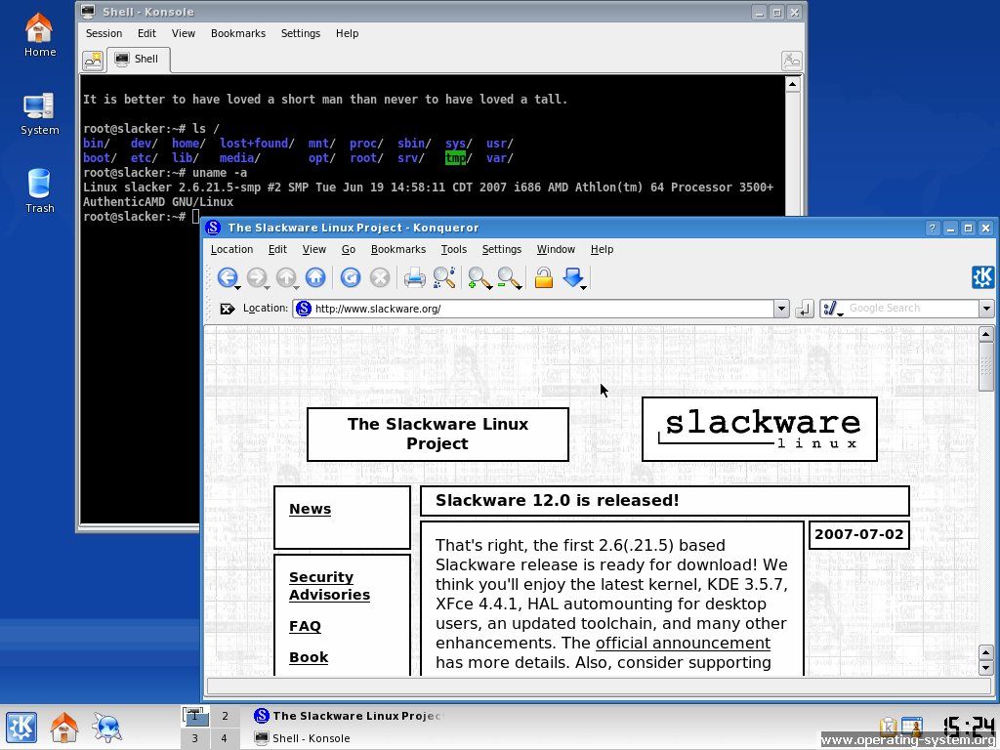
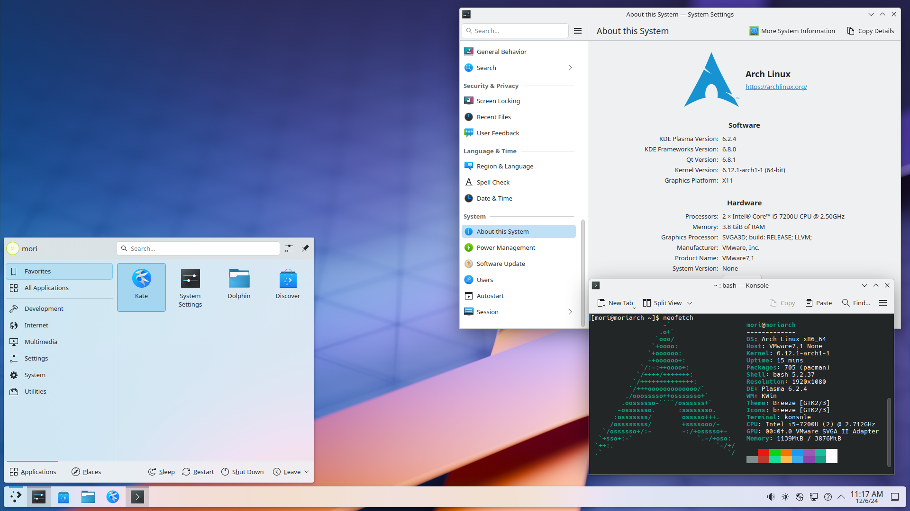
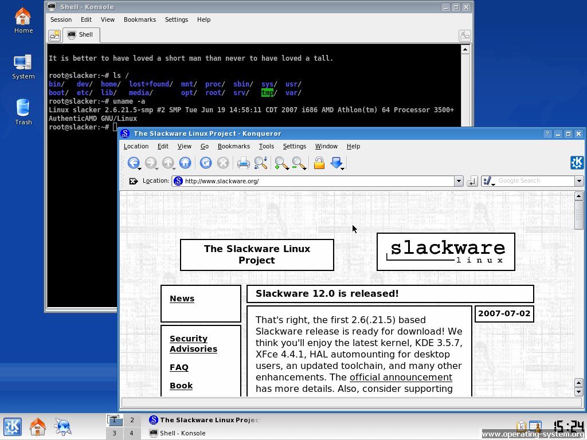

📜 Витоки: UNIX і потреба у відкритості
Операційна система Linux є одним із найяскравіших прикладів вільного та відкритого програмного забезпечення. Її історія бере початок на початку 1990-х років, однак справжнє підґрунтя формувалося значно раніше — ще у 1969 році, коли в лабораторіях Bell Labs була розроблена UNIX. Ця ОС швидко стала популярною завдяки модульності, стабільності та портативності. Проте з часом UNIX почала комерціалізовуватися, що обмежило вільний доступ до її коду. Тому розробники почали шукати відкриту альтернативу.
👨💻 Народження Linux
У 1991 році фінський студент Лінус Торвальдс вирішив створити власне ядро ОС. 25 серпня 1991 року він повідомив у групі comp.os.minix про свій проєкт — нову вільну ОС. Перша версія ядра була простою, але з відкритим кодом, що привернуло увагу спільноти.
📂 GNU + Linux = повноцінна ОС
Ядро Linux саме по собі не є завершеною операційною системою — це лише «серце», що керує апаратними ресурсами. Для того щоб створити повноцінну ОС, потрібні ще утиліти, компілятори, оболонки, текстові редактори, файлові системи тощо. І саме тут важливу роль відіграє проєкт GNU, розпочатий Річардом Столлманом у 1983 році. GNU надає всі необхідні компоненти, крім ядра. Коли у 1991 році з’явився Linux, його ідеально поєднали з GNU-інструментами, утворивши стабільну, функціональну та вільну ОС. Саме ця комбінація, яку технічно правильно називати GNU/Linux, стала базою для більшості сучасних дистрибутивів і дала старт новій ері у світі відкритого ПЗ.
🚀 Поява перших дистрибутивів
Перші дистрибутиви Linux стали відповіддю на потребу у зручнішому способі розгортання системи. Slackware (1993) був одним із найперших і орієнтувався на технічно досвідчених користувачів, пропонуючи мінімалізм і стабільність. Debian (1993) вирізнявся відкритим підходом до розробки, де всі зміни ухвалювались спільнотою. Це стало основою для багатьох інших дистрибутивів, зокрема Ubuntu. Red Hat Linux (1994) був орієнтований на комерційне використання і заклав підґрунтя для корпоративної підтримки Linux. Згодом з’явилися Mandrake, SUSE, Gentoo, а з часом — і зручніші для початківців, як-от Ubuntu, Linux Mint та інші. Кожен дистрибутив мав свої особливості, цільову аудиторію та філософію.
🖥️ Поширення на сервери
У 2000-х роках Linux став стандартом у серверному сегменті. Його використовували у дата-центрах, корпоративних рішеннях, банках, хостингах. Компанії як IBM, Oracle, Google активно підтримували розвиток Linux. Linux завоював довіру серверного сегмента завдяки своїй стабільності, безпеці та гнучкості. Сервери на Linux можуть працювати роками без перезавантаження, що особливо важливо для критичних систем. Відкритий код дозволяє швидко виявляти та виправляти вразливості, а можливість повного контролю над усіма компонентами системи дає адміністраторам гнучкість у налаштуванні під конкретні завдання. Крім того, Linux чудово працює з мережею, легко масштабується для обробки великих обсягів трафіку та не потребує ліцензійних витрат. Усе це робить його ідеальним для дата-центрів, банків, хмарних сервісів та інфраструктур великих компаній.
📱 Linux у смартфонах: Android
У 2008 році Google випустила Android — ОС на базі ядра Linux. Сьогодні Android — найпопулярніша мобільна платформа у світі. Ядро Linux також використовується у телевізорах, автомобілях, маршрутизаторах, IoT-пристроях. Коли Google почала розробку Android, вона потребувала ядра, яке було б надійним, адаптивним і юридично доступним для модифікації. Ядро Linux відповідало цим критеріям, адже вже мало багаторічну історію використання у вбудованих системах. Воно легко переносилося на різну апаратну архітектуру, зокрема ARM, яка використовується в смартфонах. Завдяки відкритій ліцензії Google змогла адаптувати Linux під свої потреби без порушень, зберігаючи можливість швидко розвивати платформу. Таким чином, Android отримав перевірене ядро з широкою підтримкою, що й стало основою його подальшого успіху.
💡 Сучасний розвиток
Сьогодні над ядром Linux працюють тисячі розробників по всьому світу. До розробки долучаються гіганти: Intel, Google, Red Hat, Canonical, Samsung. Linux постійно оновлюється, покращується підтримка обладнання, безпека та стабільність.
💻 Популярні дистрибутиви
- Ubuntu — зручна для новачків, підтримується Canonical.
- Fedora — сучасна, з новими технологіями.
- Debian — стабільна та перевірена.
- Arch Linux — мінімалістична та для просунутих.
- Linux Mint — альтернатива Windows з приємним інтерфейсом.
🖼️ Ілюстрації
 



🔚 Висновок
Із студентського проєкту Linux виріс у глобальну платформу. Його відкритість, гнучкість та потужна спільнота зробили Linux основою для тисяч систем — від серверів до смартфонів. Історія Linux — це історія свободи, співпраці та технологічного поступу.